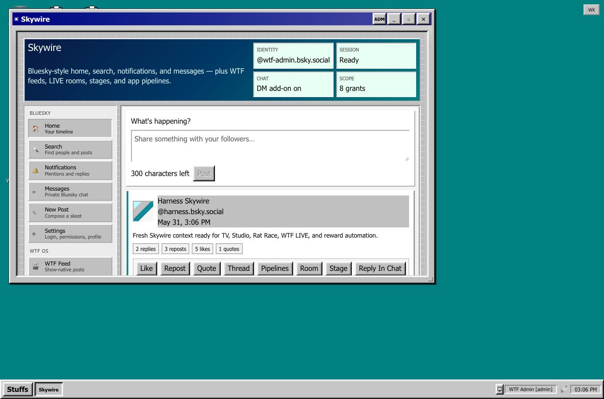
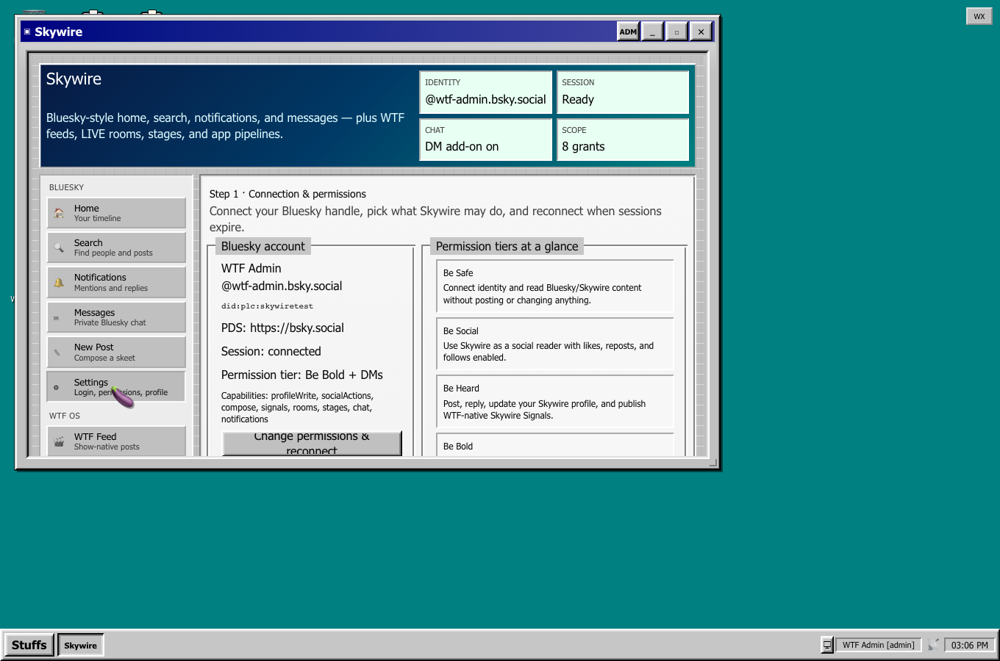
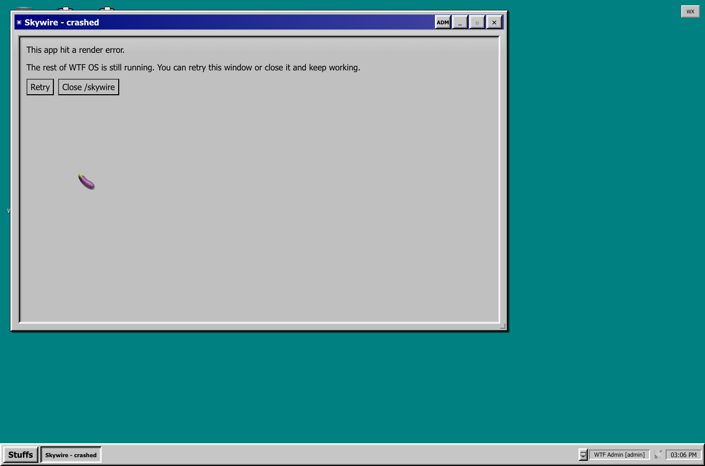
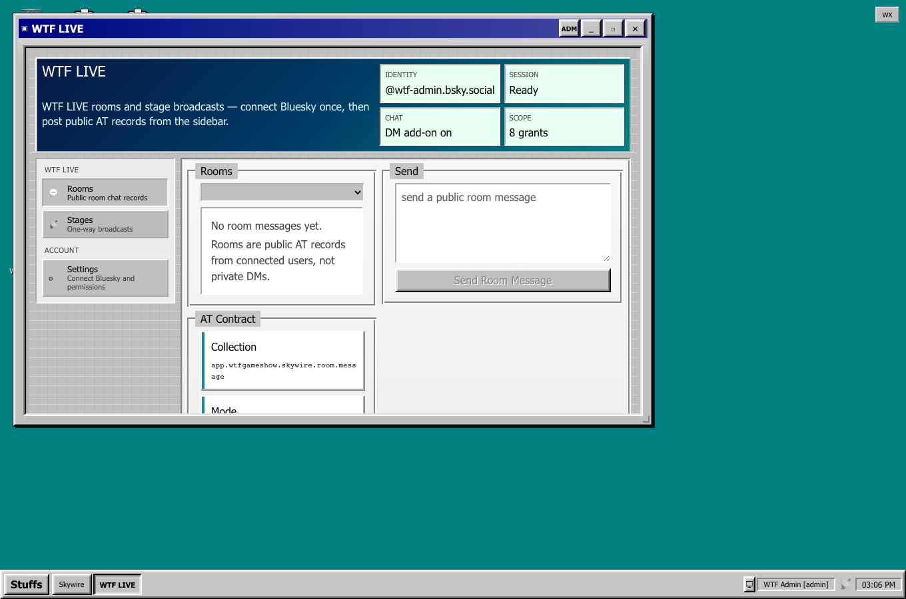

Static captures from the inventory harness. For the interactive mock (no WTF login), use:
Open live mock → http://127.0.0.1:4173/skywireNote: http://localhost:3000/skywire requires a logged-in WTF session. Use port 4173 for layout preview.



